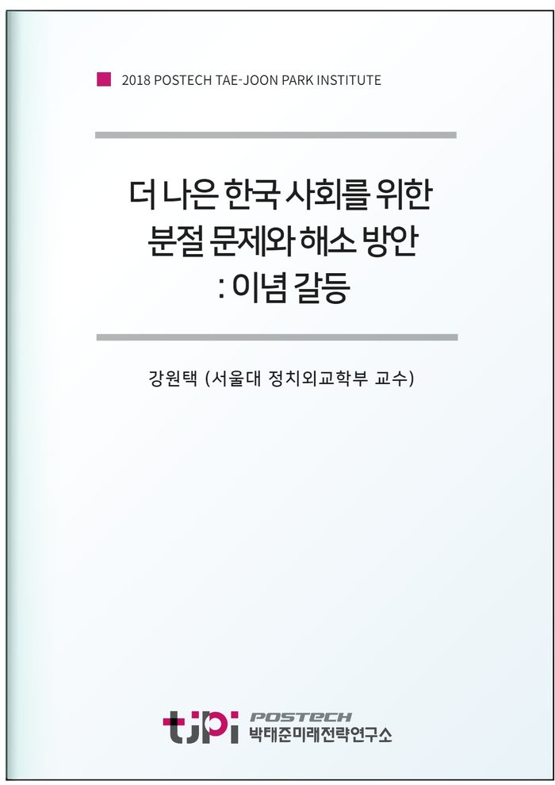

저자 강원택 (서울대 정치외교학부 교수)보도일 2018-11-30

요 약
어느 사회에서나 정치적 지향점의 차이는 존재할 수 있지만, 한국 사회에서 나타난 이념 갈등은 상당히 분열적인 특성을 보이고 있다. 이념 갈등은 단지 구체적 정책을 둘러싼 갈등뿐만 아니라 세대 간, 지역 간 갈등과 중첩되어 나타나고 있다는 점에서 심각성이 있다. 이념 갈등의 원인과 특성을 분석하여 바람직한 해결책을 모색하는 것이 필요하다.
이념 갈등의 특성을 비교정치적 관점에서 분석하며, 특히 이념 갈등이 확산되고 가열된 요인을 정치적 행위자들과의 관련 속에서 찾아보고자 한다. 즉 일반 대중 수준에서의 갈등과 정치 엘리트 간의 갈등, 대중매체의 영향 등 세 차원으로 나눠 한국 사회에서 나타나는 이념 갈등의 속성과 원인을 분석한다.
이 연구는 다음의 네 가지 내용으로 구성된다.
첫째, 한국 사회에 이념이 대표하는 정치적 속성에 대한 분석이다. 그 동안 한국 사회의 이념 갈등은 대북 정책을 둘러싸고 나타났다. 그러나 최근 들어 남북 및 북미 관계 개선의 조짐으로 이전과 다른 상황이 마련되었다. 또한 복지 등 경제적 측면에 대한 시각의 차이도 나타나고 있다. 우리 사회 이념 갈등이 어떤 속성을 갖는지 새롭게 분석해 볼 필요가 있다.
둘째, 갈등의 극화(polarization)의 정도에 대한 것이다. 즉 우리 사회의 이념 갈등의 심각성이 얼마나 크며, 상이한 이념 집단 간의 포용성과 배타성이 어느 정도인지에 대해 분석할 것이다
셋째, 이념 갈등이 심각하다면 그것은 정치 엘리트 수준에서 나타나는 것인지, 실제 일반 대중 간의 이념 대립이 심각한 것인지에 대한 것이다. 즉 국회나 정당 수준에서 갈등이 심각할 뿐 일반 국민의 경우 심각하지 않은 것인지, 아니면 엘리트뿐만 아니라 일반 대중 수준에서도 심각한 이념 대립이 나타나는지 확인해 볼 것이다.
넷째, 만약 정치 엘리트 수준뿐만 아니라 일반 대중에게서도 이념 갈등의 심각성이
목 차
1. 서론
2.
이념 갈등은 언제
왜 시작되었나
3.
이념 갈등은 얼마나 심각하고 왜 심각한가
(1)
이념 갈등의 정도
(2)
이념적 양극화의 원인
4.
어떻게 해소할 것인가
5.
결론
참고문헌
내 용
[2018 연구논문] 더 나은 한국 사회를 위한 분절 문제와 해소 방안: 이념 갈등
강원택 (서울대 정치외교학부 교수)
원문은
미래전략연구총서 11
막힌사회와 그 비상구들]로
발간되었습니다.